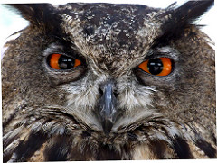

Teeny Tiny!
The Elf Owl is the world's smallest owl. They are about 5-6 inches tall. Awwwwwww!
 Read more about Elf Owls
Read more about Elf Owls
They're a hoot!
Owls are birds from the order Strigiformes, which includes about 200 species of mostly solitary and nocturnal birds of prey typified by an upright stance, a large, broad head, binocular vision, binaural hearing, sharp talons, and feathers adapted for silent flight. Exceptions include the diurnal northern hawk-owl and the gregarious burrowing owl.


A wise old owl sat on an oak;
The more he saw the less he spoke;
The less he spoke the more he heard;
Why aren't we like that wise old bird?
The Elf Owl is the world's smallest owl. They are about 5-6 inches tall. Awwwwwww!
Read more about Elf Owls
The Northern Hawk Owl can spot a vole up to half a mile away.
 Read more about Northern Hawk Owls
Read more about Northern Hawk Owls
A group of owls is called a parliament. This originates from C.S. Lewis’ description of a meeting of owls in The Chronicles of Narnia.
 Read more about naming groups of brids